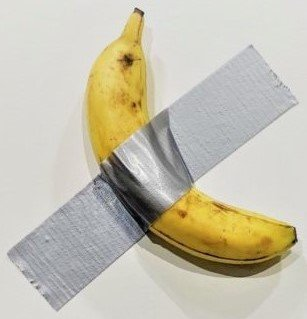

Comedian
Maurizio Cattelan · 2019 · Banana and duct tape
In copyright. Look and learn: shown for study, not for download.
The work is a certificate of authenticity with diagrams and instructions; the banana and the tape are replaced as needed. It is to be taped to the wall exactly 1.6 metres above the floor. Cattelan bought the first bananas at a grocery store in Miami for an estimated 30 cents, and two of the three editions sold at Art Basel Miami Beach in 2019 for $120,000 each. In November 2024 Justin Sun paid $6.2 million for an edition at Sotheby's, and he ate the banana at a press conference nine days later.